¿Que es la cultura en una nación?
La cultura en una nación se refiere al conjunto de valores, tradiciones, creencias, costumbres, normas y formas de vida compartida por las personas que pertenecen a esa nación. La cultura de una nación se desarrolla a lo largo del tiempo y es moldeada por diversos factores, como la historia, el idioma, la religión, la geografía, las artes, la literatura, la música, la comida y otros aspectos de la vida cotidiana .
La cultura en una nación puede ser diversa y abarcar diferentes grupos étnicos, regiones o subculturas dentro del país. También puede incluir la forma en que las personas se visten, los tipos de vivienda, las tradiciones festivas, las prácticas culinarias y muchas otras expresiones culturales.
La cultura en una nación es un elemento importante de identidad y cohesión social. Ayuda a definir quiénes somos como sociedad y proporciona un marco de referencia para nuestras interacciones y comportamientos. También juega un papel en la transmisión del conocimiento, la historia y las experiencias de generación en generación.
Es importante tener en cuenta que la cultura en una nación es dinámica y evoluciona con el tiempo. Está influenciada por los cambios sociales, económicos, políticos y tecnológicos, así como por las interacciones con otras culturas. Por lo tanto, la cultura de una nación puede ser fluida y adaptable, pero al mismo tiempo, tiene elementos arraigados que la distinguen de otras culturas.
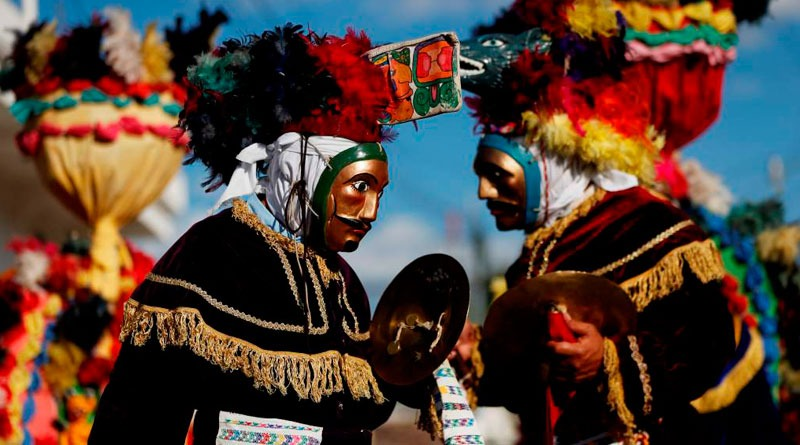
Culturas De Guatemala:
Cultura Maya
Maya: La cultura Maya tiene una presencia significativa en Guatemala. Los mayas son descendientes de una antigua civilización y conservan tradiciones, idiomas y costumbres distintivas. Se pueden encontrar comunidades mayas en diferentes regiones del país, como los Quiché, Kaqchikel, K'iche', Mam, Q'eqchi', entre otros.
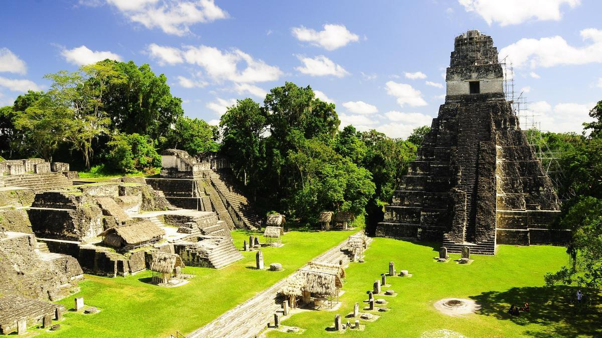
Cultura Ladina
Ladina: La cultura ladina representa una mezcla de influencias indígenas y españolas. Los ladinos son guatemaltecos mestizos, es decir, tienen ascendencia indígena y europea. La cultura ladina ha sido moldeada por siglos de interacción entre estas dos herencias.
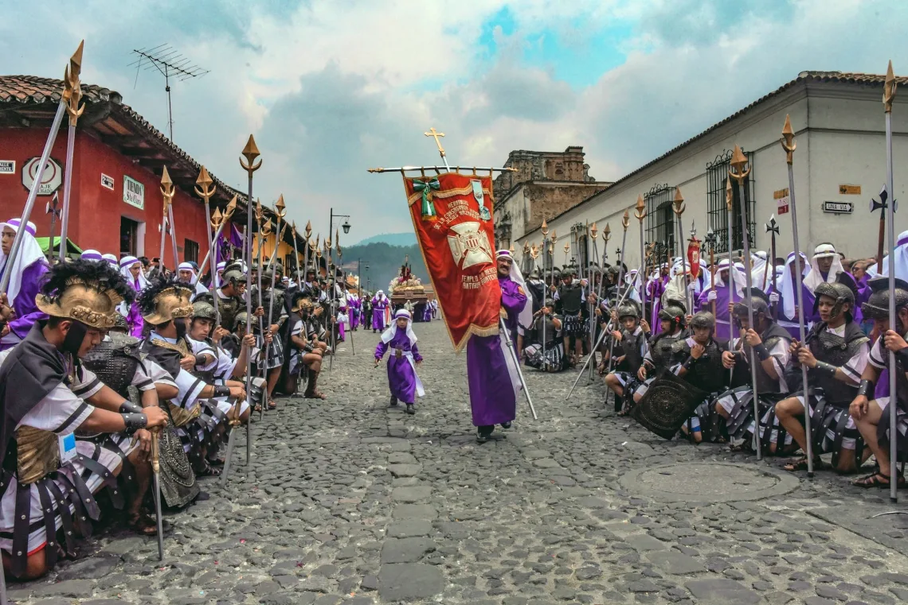
Cultura Garifuna
Garífuna: La cultura garífuna se encuentra principalmente en la costa caribeña de Guatemala. Los garífunas son descendientes de africanos y amerindios caribes, y tienen una rica tradición musical, danzas y gastronomía distintivas.
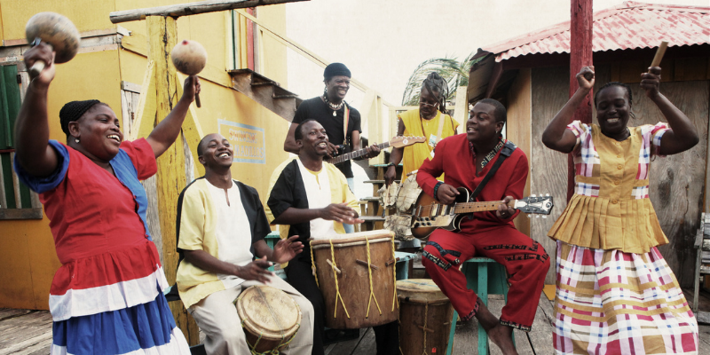
Cultura Xinka
Xincas: El pueblo Xinca es uno de los pueblos indígenas de Guatemala y habita principalmente en la región sur del país. Tienen una lengua y cultura propia, y han conservado tradiciones ancestrales a lo largo del tiempo.
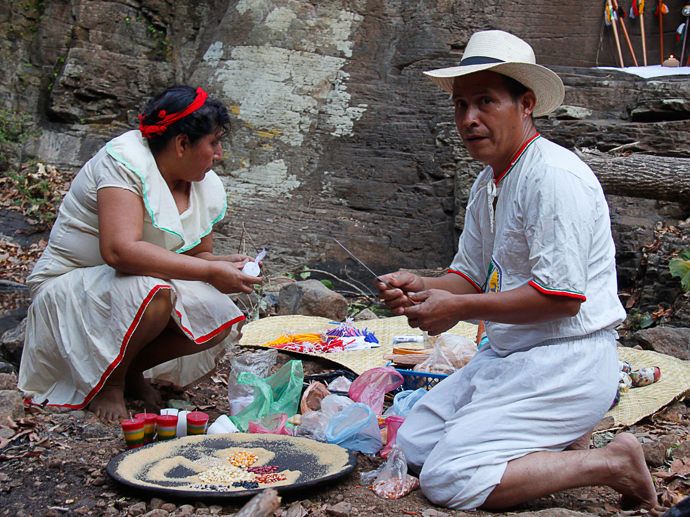
Arte y expresiones culturales:
Artesanía:
Artesanía: Guatemala es conocida por su artesanía tradicional, que incluye tejidos de alta calidad, como los textiles de colores brillantes y los tejidos de telar de cintura. Los trajes típicos y las prendas elaboradas a mano son parte integral de la identidad cultural guatemalteca.
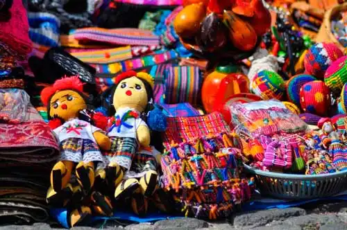
Pintura
Pintura:El arte pictórico en Guatemala tiene una larga historia que se remonta a la época colonial. La pintura maya prehispánica, con sus vibrantes colores y representaciones simbólicas, ha influido en el arte contemporáneo. Pintores guatemaltecos como Carlos Mérida y Alfredo Gálvez son reconocidos internacionalmente.
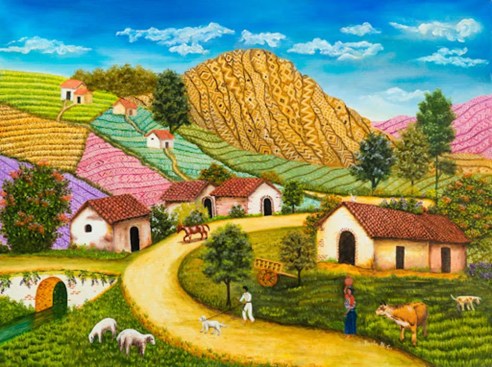
Música
Música: La música guatemalteca es diversa y abarca diferentes géneros y estilos. La marimba, un instrumento de percusión tradicional, es considerado el símbolo musical de Guatemala. La música folclórica, los ritmos africanos de la música garífuna y la música maya contemporánea son parte de la escena musical del país.

Festival de Barriletes Gigantes:
Festival: El Festival de Barriletes Gigantes es una festividad tradicional que se celebra en Sumpango y Santiago Sacatepéquez el 1 de noviembre. Durante este evento, se elevan al cielo coloridos barriletes gigantes, que representan una conexión entre el mundo de los vivos y los muertos.
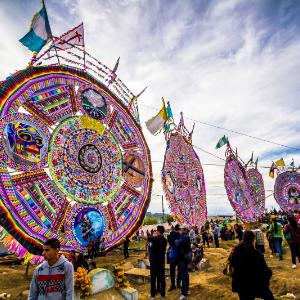
Patrimonio Cultural:
Antigua Guatemala:
Antigua es una ciudad colonial situada en el departamento de Sacatepéquez. Fue la antigua capital de Guatemala y conservó numerosos edificios coloniales, iglesias, conventos y calles empedradas. La ciudad fue declarada Patrimonio de la Humanidad por la UNESCO en 1979.
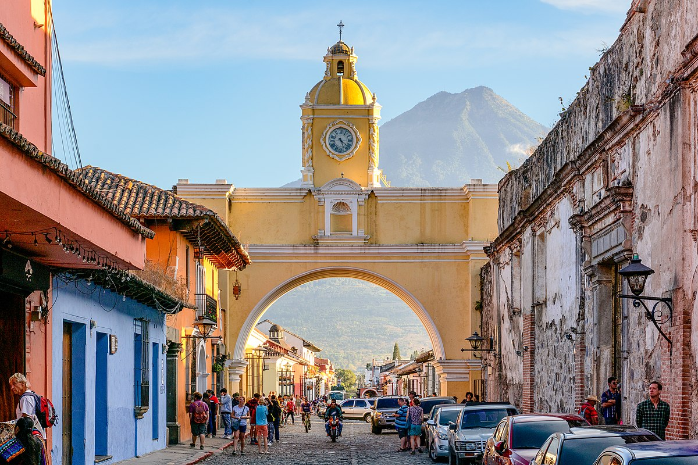
Tikal:
Tikal:Tikal es uno de los sitios arqueológicos más importantes de la civilización maya. Se encuentra en el departamento de Petén y cuenta con templos, pirámides y plazas que datan de la época precolombina. Tikal fue declarado Patrimonio de la Humanidad por la UNESCO en 1979.
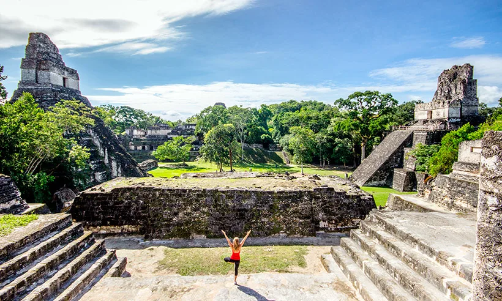
El traje típico:
El traje típico:El traje tradicional de Guatemala varía según la región y el grupo étnico. Cada traje tiene características únicas, como tejidos, bordados y colores específicos, que reflejan la identidad cultural y el legado ancestral de la comunidad.
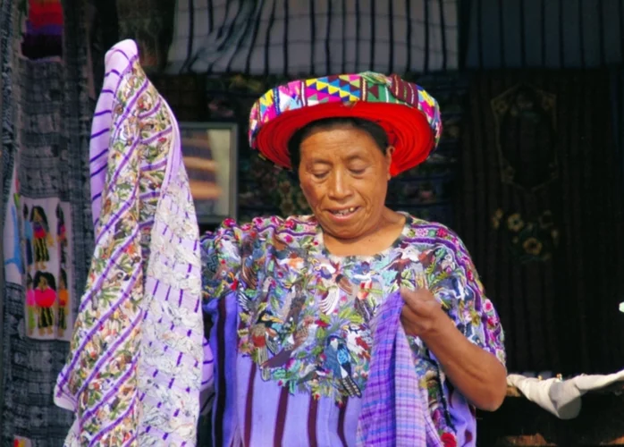
Chichicastenango:
Chichicastenango: Chichicastenango es conocido por su mercado tradicional, que atrae a visitantes nacionales e internacionales. El mercado ofrece una amplia variedad de productos artesanales, textiles, cerámicas y alimentos típicos.
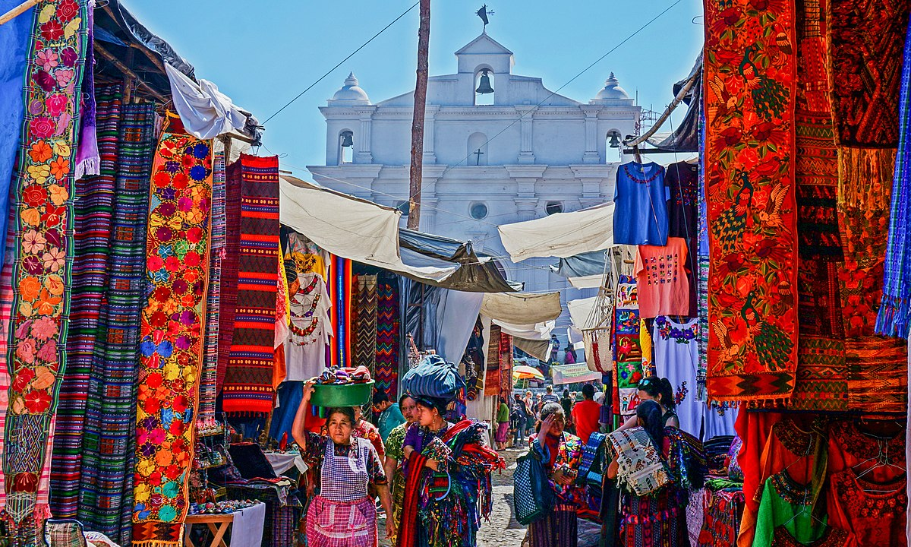